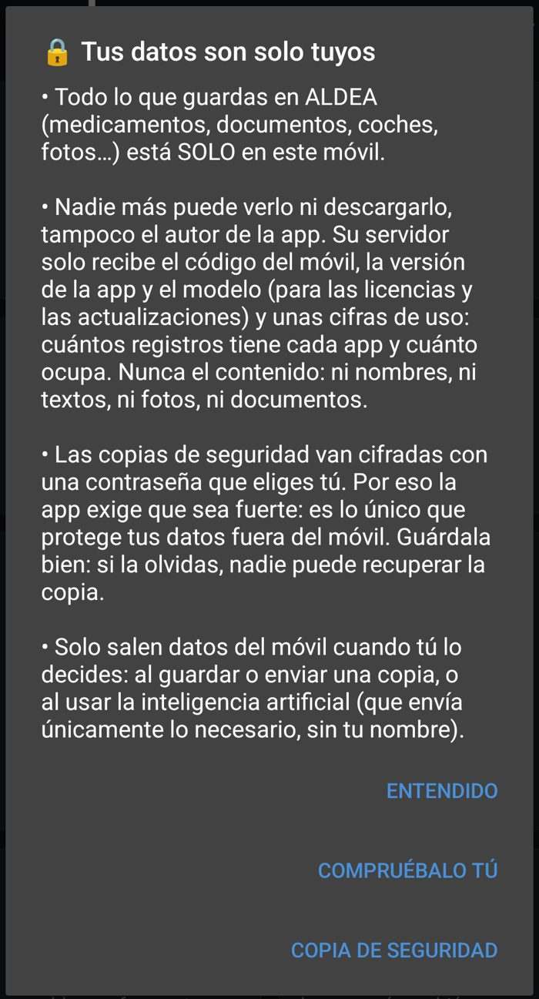

- Tus datos se guardan solo en tu dispositivo, en una zona privada a la que no acceden otras aplicaciones. Nadie más puede verlos ni descargarlos, tampoco el autor.
- Las aplicaciones de ALDEA funcionan dentro del móvil y solo ALDEA puede comunicarse con ellas: ni otras aplicaciones del móvil ni nadie de tu red wifi pueden acceder.
- Para la licencia y las actualizaciones se envía solo el código del dispositivo, la versión, el modelo y unas cifras de uso (cuántos registros hay y cuánto ocupan). Nunca el contenido.
- Si la aplicación falla, envía al autor un informe técnico (qué parte del programa falló, versión y modelo). Nunca tus datos.
- Solo sale algo más cuando tú lo usas: lo que escribes al autor; lo que buscas en CIMA; las direcciones de Niños para calcular trayectos (OpenRouteService); y lo que envías a la inteligencia artificial, que va directo a la empresa que elijas con tu clave (una foto o un PDF van tal cual, con lo que salga en ellos).
- Para preguntar por los datos de tu móvil o pedir que se borren: aldea.vich.app [arroba] gmail.com. Puedes reclamar ante la Agencia Española de Protección de Datos (aepd.es).
- Las copias van cifradas (AES-256) con tu contraseña. Android no incluye los datos de ALDEA en sus copias: usa la de la propia aplicación.
- Las capturas del sistema están bloqueadas: ninguna otra aplicación puede grabar ni ver la pantalla de ALDEA.
- Compruébalo tú: con aplicaciones como PCAPdroid (muestra cada conexión), ClassyShark3xodus (busca rastreadores: no hay ninguno) o NetGuard (quítale internet y verás que sigue funcionando). Lo tienes en el portal › Privacidad › Compruébalo tú.

11.1 Botón de captura (opcional)
Como las capturas del sistema están bloqueadas, ALDEA tiene su propio botón de captura: un pequeño botón redondo 📸 en el borde izquierdo que guarda lo que ves en la galería (álbum «ALDEA») para compartirlo. Viene desactivado.
- Tócalo para guardar la pantalla en la galería o compartirla.
- Mantenlo pulsado para contarle al autor un fallo o una duda: ves en qué menú estás (📍) y puedes escribir qué pasa. Solo dónde estoy envía únicamente esa línea y tu texto (lo más seguro: el autor abre el mismo menú con datos de prueba). Con la imagen manda también la pantalla; si se ven datos que no quieras enseñar, no la envíes. No se guarda en la galería.
- Si te estorba, arrástralo con el dedo a otro sitio: se queda donde lo dejes.
- Para activarlo o quitarlo: portal › 📸 Botón de captura.
Capturas con información médica
En Salud, antes de capturar aparece una advertencia: la captura sale de ALDEA y se guarda como una imagen normal en la galería, sin su protección; otras aplicaciones pueden verla o subirla a la nube.
Hazla solo si la necesitas, compártela solo con quien deba verla y bórrala cuando ya no te haga falta.
11.2 🔒 Bloqueo de ALDEA
Para que quien conoce el PIN o el patrón de tu móvil (tu pareja, un familiar) no pueda mirar tu Salud ni lo que elijas. Es un bloqueo propio de ALDEA, distinto del del teléfono.
- Portal › 🔒 Bloqueo de ALDEA. Elige cómo desbloquear: ✏️ dibujar un patrón (une al menos 4 puntos) o 🔢 un PIN de 4 a 12 cifras. Que sea distinto del de tu móvil.
- Apunta en papel el código de recuperación que aparece: sirve para poner otro patrón o PIN si lo olvidas. No se vuelve a enseñar.
- Si tu móvil tiene huellas guardadas, ALDEA te ofrece entrar también con tu huella. Si la aceptas, es lo primero que sale, y debajo tienes Usar mi patrón o PIN.
- Elige qué se protege: Salud viene marcada, y puedes añadir cualquier otra aplicación, la copia de seguridad o la inteligencia artificial.
- Una vez desbloqueado sigue abierto mientras lo usas; se cierra a los 5 minutos sin usarlo o si sales de ALDEA más de 2 minutos.
- Tras 5 intentos fallidos hay que esperar, y la espera crece con cada fallo.
- Ni el patrón ni el PIN se guardan tal cual: solo una huella cifrada que no permite averiguarlos.
- Para cambiarlo o quitarlo: portal › 🔒 Bloqueo de ALDEA › Cambiar patrón o PIN o Quitar el bloqueo.